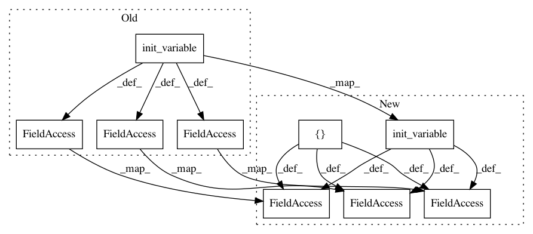

202908a6634e9ac5b15658ed3f0cfe50606f32f2,examples/opensets/mnist_model2.py,,,#,41
Before Change
print()
print("Start training...")
t = time()
train_tp = (Pipeline(config=config)
.init_variable("loss_history", init_on_each_run=list)
.init_variable("current_loss", init_on_each_run=0)
.init_variable("pred_label", init_on_each_run=list)
.init_variable("input_tensor_name", "images")
.init_model("dynamic", MyModel, "conv",
config={"session": {"config": tf.ConfigProto(allow_soft_placement=True)},
"loss": "ce",
"optimizer": {"name":"Adam", "use_locking": True},
"inputs": dict(images={"shape": (None, None, 1)}, //"shape": (28, 28, 1), "transform": "mip @ 1"},
//labels={"shape": 10, "dtype": "uint8",
labels={"classes": (10+np.arange(10)).astype("str"),
"transform": "ohe", "name": "targets"})})
.make_digits()
.train_model("conv", fetches=["loss", "predicted_labels"],
feed_dict={V("input_tensor_name"): B("images"),
"labels": B("digits")},
save_to=[V("current_loss"), V("pred_label")])
.print_variable("current_loss")
.update_variable("loss_history", V("current_loss"), mode="a"))
train_pp = (train_tp << mnist.train)
train_pp.run(BATCH_SIZE, shuffle=True, n_epochs=1, drop_last=True, prefetch=0)
print("End training", time() - t)
print()
print("Start testing...")
t = time()
test_pp = (mnist.test.p
.import_model("conv", train_pp)
.init_variable("all_targets", init_on_each_run=list)
.init_variable("all_predictions", init_on_each_run=list)
.make_digits()
.predict_model("conv", fetches="predicted_labels", feed_dict={"images": B("images"),
"labels": B("digits")},
save_to=V("all_predictions"), mode="a")
.update_variable("all_targets", B("digits"), mode="a")
.run(BATCH_SIZE, shuffle=True, n_epochs=1, drop_last=False, prefetch=0))
print("End testing", time() - t)
print("Predictions")
predictions = np.concatenate(test_pp.get_variable("all_predictions"))
targets = np.concatenate(test_pp.get_variable("all_targets"))
accuracy = (predictions == targets).sum() / len(predictions) * 100
print("Accuracy {:6.2f}".format(accuracy))
print(targets)
print(predictions)
conv = train_pp.get_model_by_name("conv")
After Change
print()
print("Start training...")
t = time()
train_tp = (Pipeline(config=config)
.init_variable("loss_history", init_on_each_run=list)
.init_variable("current_loss", init_on_each_run=0)
.init_variable("input_tensor_name", "images")
.init_model("dynamic", MyModel, "conv",
config={"session": {"config": tf.ConfigProto(allow_soft_placement=True)},
"loss": "ce",
"optimizer": {"name":"Adam", "use_locking": True},
"inputs": dict(images={"shape": (None, None, 1)}, //"shape": (28, 28, 1), "transform": "mip @ 1"},
//labels={"shape": 10, "dtype": "uint8",
labels={"classes": (10+np.arange(10)).astype("str"),
"transform": "ohe", "name": "targets"}),
"output": dict(ops=["labels", "accuracy"])})
.make_digits()
.train_model("conv", fetches="loss",
feed_dict={V("input_tensor_name"): B("images"),
"labels": B("digits")},
save_to=V("current_loss"))
.print_variable("current_loss")
.update_variable("loss_history", V("current_loss"), mode="a"))
train_pp = (train_tp << mnist.train)
train_pp.run(BATCH_SIZE, shuffle=True, n_epochs=1, drop_last=True, prefetch=0)
print("End training", time() - t)
print()
print("Start testing...")
t = time()
test_pp = (mnist.test.p
.import_model("conv", train_pp)
.init_variable("accuracy", init_on_each_run=list)
.make_digits()
.predict_model("conv", fetches="accuracy", feed_dict={"images": B("images"),
"labels": B("digits")},
save_to=V("accuracy"), mode="a")
.run(BATCH_SIZE, shuffle=True, n_epochs=1, drop_last=False, prefetch=0))
print("End testing", time() - t)
accuracy = test_pp.get_variable("accuracy")
print("Accuracy {:6.2f}".format(np.array(accuracy).mean()))
conv = train_pp.get_model_by_name("conv")
In pattern: SUPERPATTERN
Frequency: 4
Non-data size: 9
Instances
Project Name: analysiscenter/batchflow
Commit Name: 202908a6634e9ac5b15658ed3f0cfe50606f32f2
Time: 2017-11-14
Author: rhudor@gmail.com
File Name: examples/opensets/mnist_model2.py
Class Name:
Method Name:
Project Name: analysiscenter/batchflow
Commit Name: 899fd2b1572cc0306292396e2e4879df915798da
Time: 2017-10-18
Author: rhudor@gmail.com
File Name: examples/opensets/mnist_model2.py
Class Name:
Method Name:
Project Name: analysiscenter/batchflow
Commit Name: fc6c75deed83ab3b85c47e53656ab85289eaea66
Time: 2018-01-15
Author: rhudor@gmail.com
File Name: examples/opensets/mnist_model3.py
Class Name:
Method Name:
Project Name: analysiscenter/batchflow
Commit Name: 811177b712cc1eea4b59221357c6474f98315b2d
Time: 2017-10-17
Author: rhudor@gmail.com
File Name: examples/opensets/mnist_model2.py
Class Name:
Method Name: